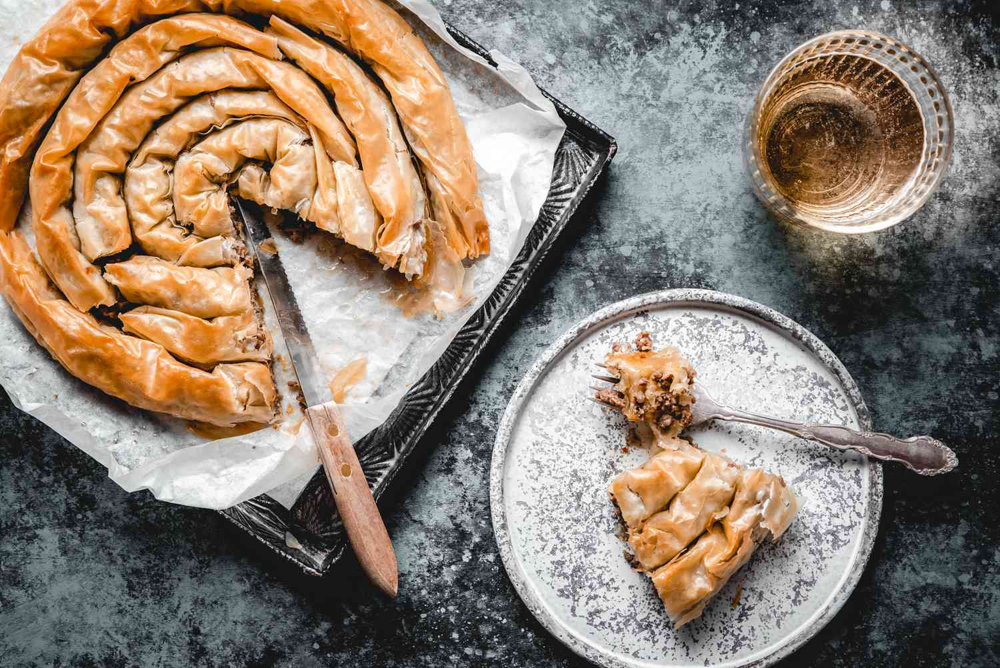

Burek

Description
Burek is a pie that traces it's origins to the Ottoman Empire, where it was called borek. In Bosnia it is traditionally made with meat, while other fillings change the name of the pie itself (cheese stuffing - sirnica, potato stuffing - krompirusa, and more).
Ingredients
- 1 pound mixed meat(best to use beef, veal, and pork mix)
- 1 pound yellow onion
- Box of phyllo pastry with 12 sheets
- Salt and black pepper to taste
- Olive oil
- Vegeta and water
How to make it
- Heat a frying pan over medium-low heat and add the olive oil
- Preheat the oven to 400 F
- Saute chopped onion until soft, then add mixed meat
- Once the meat changes color add the spices
- Cook until crumbly but not too dry, set aside to cool
- Place one sheet of phyllo on the working surface, brush with olive oil
- Place another phyllo sheet on top of the first one, then spread 1/6th of the cooked meat all over the sheet
- Fold the bottom and roll it into a cylinder
- Place the rolled dough onto a non stick baking sheet
- Repeat the process until all the meat is used up
- Bake in the oven for 15 minutes
- While it is baking, take a heaping spoon of Vegeta seasoning and mix with a cup of water
- After 15 minutes, take the burek out and brush it with Vegeta and water mixture
- Place it back in the oven for another 5 to 10 minutes
- Once it is golden brown take it out of the oven and let it sit for 5 mintes
- Carve up and serve it with traditional Bosnian yogurt
- Prijatno!